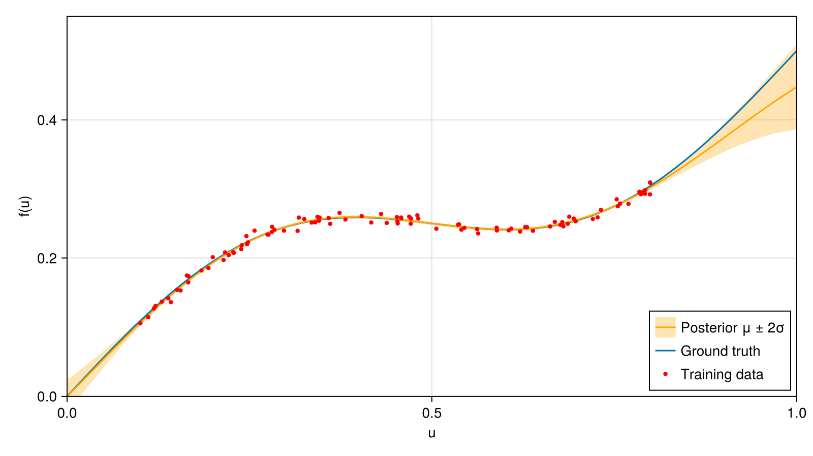

Getting Started
Installation
RecursiveGPs.jl is not yet registered in the General registry. Install it from GitHub:
using Pkg
Pkg.add(url = "https://github.com/martincornejo/RecursiveGPs.jl")The package depends on AbstractGPs.jl for kernel definitions and LowLevelParticleFilters.jl for the Kalman Filter backend.
A first example
The following example covers the basic workflow of the package. A GP prior is placed on a set of basis points and wrapped in a Kalman filter. The filter learns an unknown scalar function from noisy samples, one sample at a time, and the learned function is then evaluated at arbitrary inputs together with its uncertainty.
using RecursiveGPs # RGP, ExtendedKalmanFilter, measurement_gp, uncertainty_gp, predict_gp
using AbstractGPs # kernels
using StaticArrays # static vectors and matrices for the filter
using LinearAlgebra # diag
using Random
using CairoMakie1. Data
100 samples of $f(u) = 0.5u + 0.1\sin(2\pi u)$ on $[0.1, 0.8]$, with sensor noise of standard deviation 0.005:
Random.seed!(42)
f(u) = 0.5u + 0.1 * sinpi(2u)
σn = 0.005
us = 0.1 .+ 0.7 .* rand(100)
ys = [SA[f(u) + σn * randn()] for u in us]2. GP prior
An RGP is defined by a kernel and a set of basis points that covers the input range. Here the kernel is a squared exponential with variance 0.1 and length scale 0.4, close to the maximum-likelihood values found in the Hyperparameter Tuning tutorial. The basis has 21 points on $[0, 1]$:
kernel = 0.1 * with_lengthscale(SEKernel(), 0.4)
b0 = collect(range(0, 1, length = 21))
rgp = RGP(kernel, b0)A mean function can be passed as the first argument, for example RGP(u -> 0.5u, kernel, b0).
3. Filter
The filter state is the vector of GP values at the basis points, initialised with the prior mean and covariance. The function is constant in time, so the dynamics are the identity. The measurement is the GP mean at the input, and the measurement noise is the residual variance of the GP plus the sensor noise variance:
dynamics(x, u, p, t) = x
measurement(x, u, p, t) = SA[measurement_gp(p.f, x, u)]
R2(x, u, p, t) = @SMatrix [uncertainty_gp(p.f, u) + σn^2]
kf = ExtendedKalmanFilter((; f = rgp), dynamics, measurement, R2)The named tuple (; f = rgp) names the component f. The component is available as p.f inside the model functions and selects it in predict_gp.
4. Learning
Each call kf(u, y) runs one prediction and one correction step:
for (u, y) in zip(us, ys)
kf(u, y)
end5. Prediction
predict_gp returns the posterior mean and covariance of the function at any query points:
b = collect(range(0, 1, length = 200))
post = predict_gp(kf, b, :f)
μ = post.μ # posterior mean
σ = sqrt.(diag(post.Σ)) # posterior standard deviationpredict_kf returns the predicted measurement at a single input, including the measurement noise.
fig = Figure(size = (800, 450))
ax = CairoMakie.Axis(fig[1, 1]; xlabel = "u", ylabel = "f(u)")
band!(ax, b, μ .- 2σ, μ .+ 2σ; color = (:orange, 0.3), label = "Posterior μ ± 2σ")
lines!(ax, b, f.(b); label = "Ground truth")
lines!(ax, b, μ; color = :orange, label = "Posterior μ ± 2σ")
scatter!(ax, us, first.(ys); color = :red, markersize = 6, label = "Training data")
xlims!(ax, extrema(b))
ylims!(ax, 0.0, 0.55)
axislegend(ax; position = :rb, merge = true)
fig
Within the training range, $0.1 \le u \le 0.8$, the posterior mean follows the ground truth and the band contains it. Outside this range the band widens, and the estimate relies increasingly on the prior.
The length scale sets how fast the learned function can vary. The basis spacing should be well below the length scale, and more basis points reduce the approximation error at the cost of a larger filter state.
Next steps
- Tutorials: several GPs in one model, hyperparameter tuning, and an RGP inside a physical model.
- Mathematical Background: derivation of the recursive GP.
- API Reference: all exported functions.